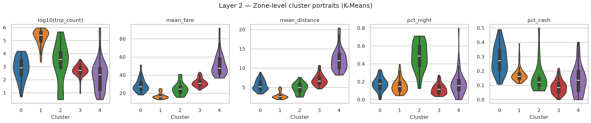
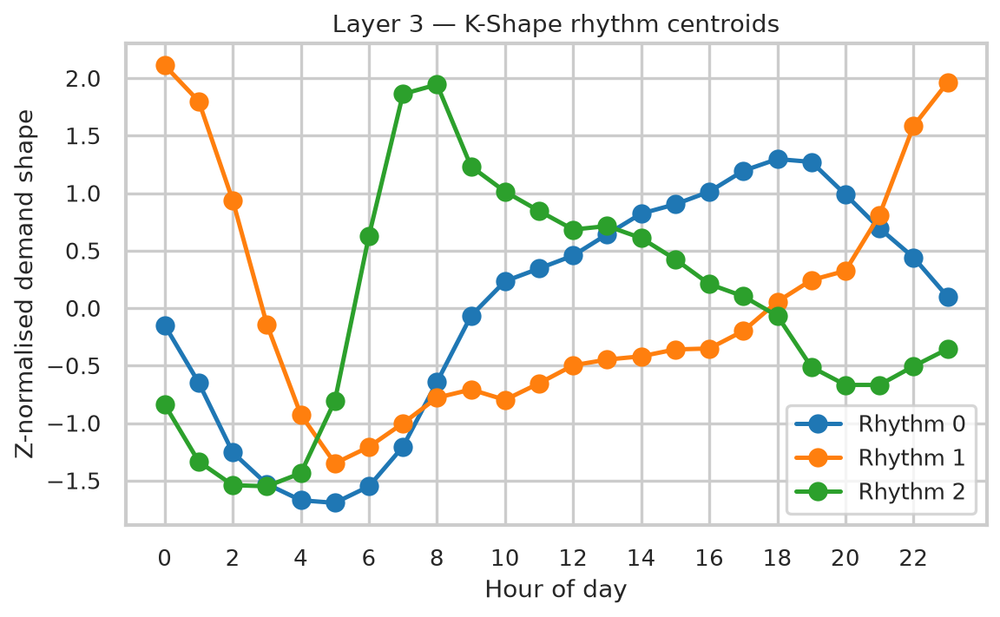
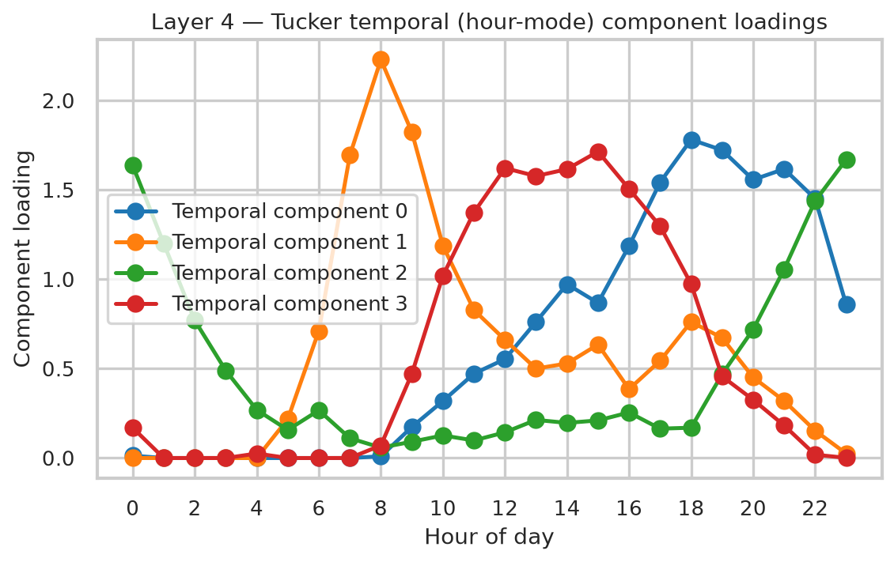
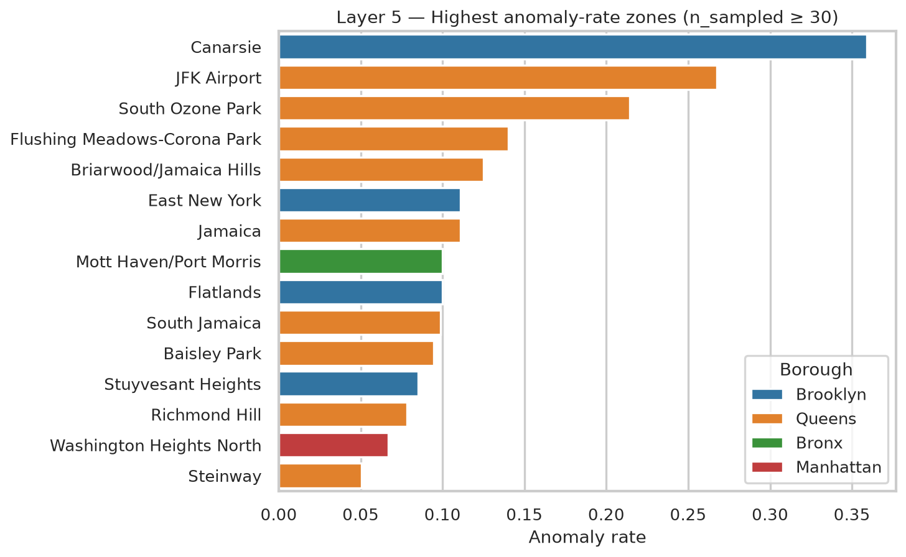
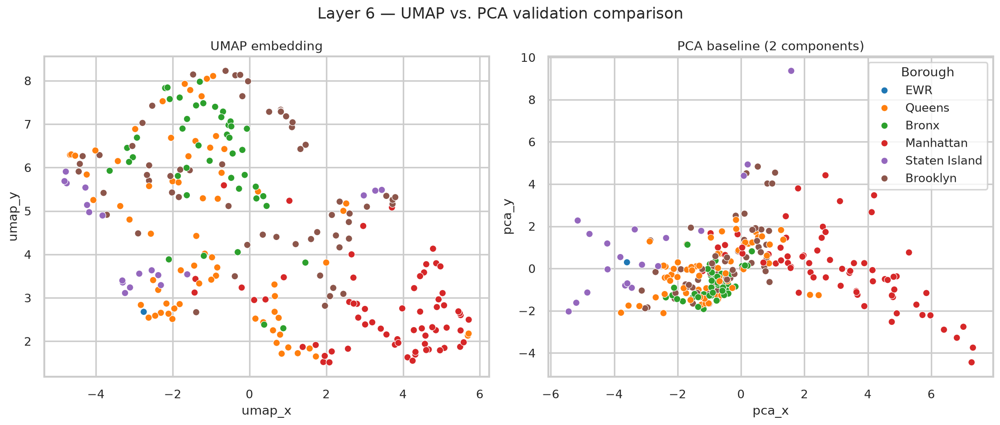

MSc Big Data Analytics · Dissertation Defense
Six unsupervised layers. 19.5 million NYC taxi trips. One city's hidden rhythm.
→ / space to advance · F for fullscreen
Roadmap
Motivation & gap
Research questions
Data & scale
Six-layer pipeline
Spatial archetypes
Temporal rhythms
Spatiotemporal fingerprint
Anomalies
Unified embedding
Cross-method triangulation
Validation & rigor
Theoretical grounding
Limitations & ethics
Contribution
Future work
Every method section pairs what we found with why that method, and not another.
Motivation
Most NYC taxi research stops at demand prediction or hotspot detection. Far fewer derive interpretable, validated mobility archetypes that hold up across spatial, temporal, and behavioural dimensions at once.
That's the gap this project targets: not "where do people go", but "what recurring types of mobility behaviour exist, and can we prove it?"
Research Questions
Layer 1 (load, clean, feature-engineer) underpins all five: it doesn't answer one RQ on its own, so RQ1 begins at Layer 2.
What distinct spatial demand archetypes emerge across NYC's 260 active taxi zones? · Layer 2
How do temporal rhythms differ across zones? · Layer 3
What latent spatiotemporal structure jointly explains zone × hour × day-type behaviour? · Layer 4
Which trips/zones behave anomalously, and why? · Layer 5
Can every zone be reduced to one unified, interpretable fingerprint? · Layer 6
Data & the Big-Data Problem
19.5M
raw trips
95.8%
retained after QC
260
of 263 zones active
500K
unbiased trip-level sample
The big-data constraint is real, not decorative: Layer 1 streams through six monthly Parquet files one at a time, computing exact zone-level and tensor aggregates incrementally, the full 19.5M rows are never materialised in memory at once. A fixed random seed (42) runs through every stochastic step.
Why · Layer 1 Engineering Decision
Methodology
L1
Load & clean
L2
K-Means
spatial
L3
K-Shape
temporal
L4
Tucker
joint
L5
Isolation Forest
anomaly
L6
UMAP
fingerprint
Each layer answers one research question independently, then Layer 6 fuses their outputs into a single 260-zone fingerprint, deliberately comparing multiple paradigms rather than committing to one clustering method up front.
Layer 2 · RQ1
k = 5 chosen for interpretability: the statistical optimum (k = 2, silhouette 0.307) collapses everything into two uninformative groups.

Details ↗Why · Layer 2 Method Justification
Acknowledged limitation: K-Means assumes convex, similarly-sized clusters, but NYC's zone geometry is irregular, so DBSCAN is flagged as future work precisely because it doesn't share that assumption.

Details ↗Layer 3 · RQ2
99 zones with sufficient hourly signal · best k = 3 (silhouette 0.355)
Why · Layer 3 Method Justification
Honest caveat: K-Shape's native shape distance isn't compatible with the standard silhouette formula, so k was selected via silhouette on Euclidean distance between the same z-normalised shapes: a documented approximation, not the native metric.
Layer 4 · RQ3
A Zone × Hour × Day-type tensor, factorised at rank (6, 4, 2): 98.2% explained variance, reconstruction error 0.134.
4 hour-mode components (peak times)
6 independent zone-mode components (top-loading zones)
Midtown East/Penn Station, East/West Village, Times Sq/JFK, Midtown Center/Union Sq, Upper West Side, and Upper East Side/LaGuardia each dominate their own component: recognisable neighbourhood groupings, not tied 1:1 to the hour components above.

Details ↗Why · Layer 4 Method Justification

Details ↗Layer 5 · RQ4
10,000 of 500K sampled trips flagged anomalous, not fraud, but long, fast, expensive outliers:
$70 vs $12.80
fare
18.8mi vs 1.8mi
distance
27mph vs 10mph
speed
Top anomaly zones: Canarsie (36%), JFK Airport (27%), South Ozone Park (21%).
Why · Layer 5 Method Justification
Reference-class caveat: the model is trained on the pooled, Manhattan-dominated trip distribution, so "anomalous" partly reflects distance from that norm (e.g. airport trips), not proof of misconduct. Worth stating explicitly before handing a ranked list to a regulator.
Layer 6 · RQ5
All 260 zones reduced to a 17-dimensional fingerprint (volume, fare, speed, tip %, cash/night/weekend share, six Tucker zone factors, anomaly rate), then embedded in 2D with UMAP.
Linear PCA explains only 48.8% of variance in 2D. UMAP preserves local neighbourhood structure instead, revealing a continuous archetype gradient rather than hard boundaries, echoing, and sharpening, the Layer 2 clusters.

Details ↗Why · Layer 6 Method Justification
Explicitly used as an exploratory visualisation tool, not a confirmatory statistical test; UMAP inter-cluster distances are not globally meaningful, so no statistical claims are drawn from embedding geometry alone; it's validated instead against Layer 2's cluster labels and known borough membership.
Discussion
Validation & Rigor
Multi-k comparison
Silhouette curves computed for k = 2–8 (L2) and 2–6 (L3), not a single arbitrary choice.
Interpretability over pure optimum
k = 5 chosen over statistically "best" k = 2: justified, not defaulted.
Rank sensitivity
Tucker rank (6,4,2) checked against three alternative ranks before committing.
Stability testing
Isolation Forest anomaly rates correlate 0.55 across random data halves.
Theoretical Grounding
Big Data 5 Vs (Laney, 2001)
★★★★★
Volume
★★★★
Velocity
★★★★
Variety
★★★
Veracity
★★★★★
Value
Literature Positioning
Limitations
Data Ethics & Privacy
Contribution
A scalable, streaming, six-layer unsupervised pipeline that turns 19.5M raw taxi trips into an empirically derived, validated taxonomy of NYC mobility behaviour: spatial archetypes, temporal rhythms, a joint spatiotemporal fingerprint, flagged anomalies, and one unified embedding.
Fixed seeds. Explicit validation at every layer. Fully open-sourced.
Future Work
Thank you
Every trip tells a story. Together, they told us five.
github.com/4barz/nyc-taxi-urban-mobility-archetypes
Appendix: full figure & table reference →